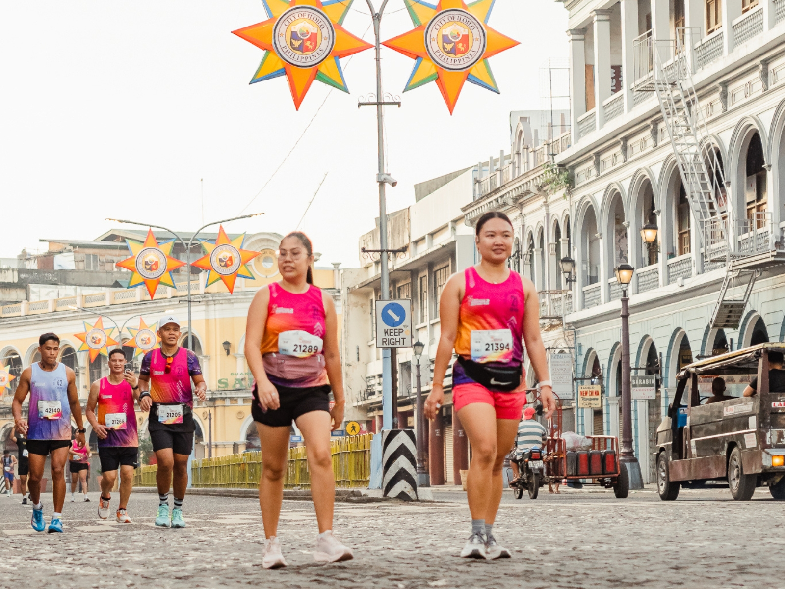
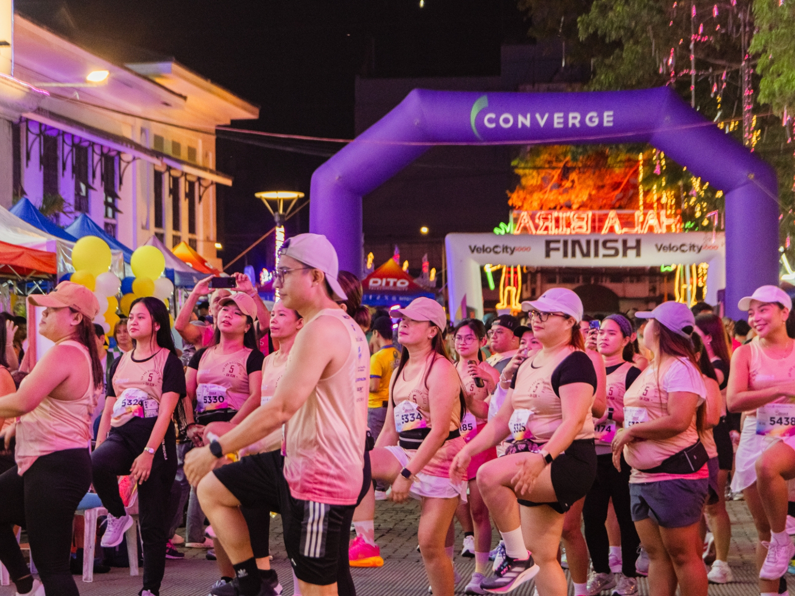
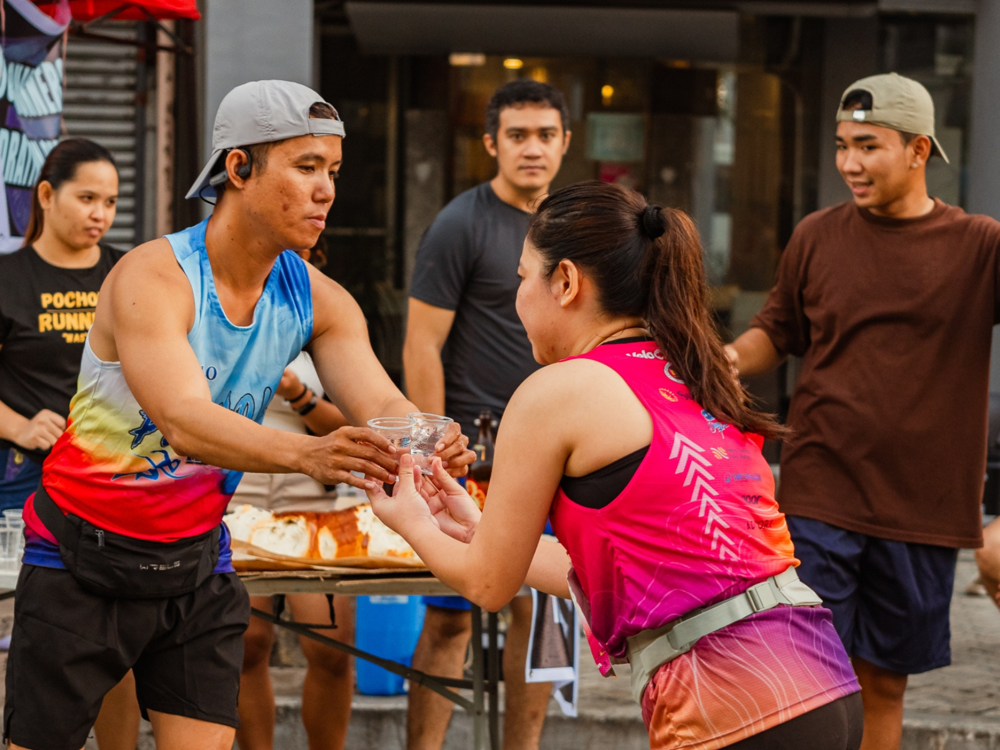
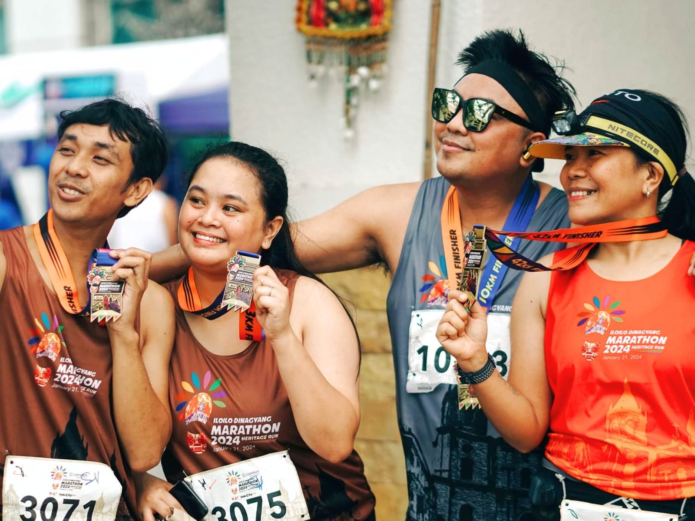

01

THE ROUTE
RUN THROUGH HISTORIC STREETS.
Pass through Calle Real and the city's historic district while discovering the rich heritage that makes Iloilo one of the Philippines' most beautiful destinations.
HERITAGE RUN 4
JANUARY 17, 2027 • ILOILO CITY, PHILIPPINES
Four distances. One heritage. Experience Iloilo in motion.
EARLY BIRD REGISTRATION ENDS IN
CHOOSE YOUR DISTANCE
From your first 5K to the ultimate 42K challenge, choose your distance and experience Iloilo in motion.
FUN RUN
A welcoming distance for beginners, families, and runners looking to experience Heritage Run 4.
Explore 5KCHALLENGE RUN
A balanced challenge for runners ready to build speed, endurance, and confidence.
Explore 10KHALF MARATHON
Take on the half marathon and discover what you're capable of over 21 kilometers.
Explore 21KFULL MARATHON
The ultimate test of endurance for runners ready to conquer the full marathon.
Explore 42KREGISTRATION
Choose your distance and secure your place at Iloilo Dinagyang Marathon 2027.
Early Bird rates are available on or before August 31, 2026.
Registration includes RFID race bib, official race singlet, finisher medal, post-race refreshments, and event support.
10K, 21K and 42K participants will also receive an official finisher shirt.
RACE INCLUSIONS
Every registration comes with the essentials you need to experience Heritage Run 4 from start to finish.
RUN THE PAST. RACE THE PRESENT.
Official race bib equipped with RFID timing technology for accurate race results.
Your official Heritage Run 4 race singlet, designed to carry the identity of the event.
A commemorative medal awarded to every official finisher who completes their chosen distance.
Refuel and recover with post-race refreshments after crossing the finish line.
Official finisher shirt for participants in the 10K, 21K and 42K distances.
Relive your Heritage Run journey through professionally captured race-day moments.
WHY RUN HERITAGE RUN?
Heritage Run is more than a marathon. It is a journey through Iloilo's history, culture, and the vibrant running community that welcomes every participant.

THE ROUTE
Pass through Calle Real and the city's historic district while discovering the rich heritage that makes Iloilo one of the Philippines' most beautiful destinations.

THE CULTURE
Run in the heart of Iloilo where the city's world-famous Dinagyang heritage, culture, and festive atmosphere create an unforgettable marathon experience.

THE EXPERIENCE
From energetic hydration stations to dedicated volunteers, every kilometer is backed by a passionate community committed to giving runners the best race-day experience.

THE FINISH
Every kilometer brings you closer to an exclusive Heritage Run finisher medal — a lasting symbol of your determination, perseverance, and unforgettable journey through the streets of Iloilo.
HERITAGE RUN JOURNEY
From a local dream to one of Western Visayas' premier marathon events, every edition has carried the Heritage Run story forward.
RUN THE PAST. RACE THE PRESENT.HERITAGE RUN 1
Our inaugural Heritage Run marked the beginning of a race built around Iloilo's history, culture, and running community.
HERITAGE RUN 2
The Heritage Run continued to grow, bringing more runners together and strengthening the community behind the race.
HERITAGE RUN 3
Heritage Run 3 marked another milestone as the event continued expanding its reach beyond Iloilo.
HERITAGE RUN 4
Our most ambitious edition yet. A bigger celebration of running, heritage, and the city we call home.
IN PARTNERSHIP WITH
Heritage Run is made possible through the support of organizations and communities who share our commitment to Iloilo, running, and an exceptional race experience.

ORGANIZED BY